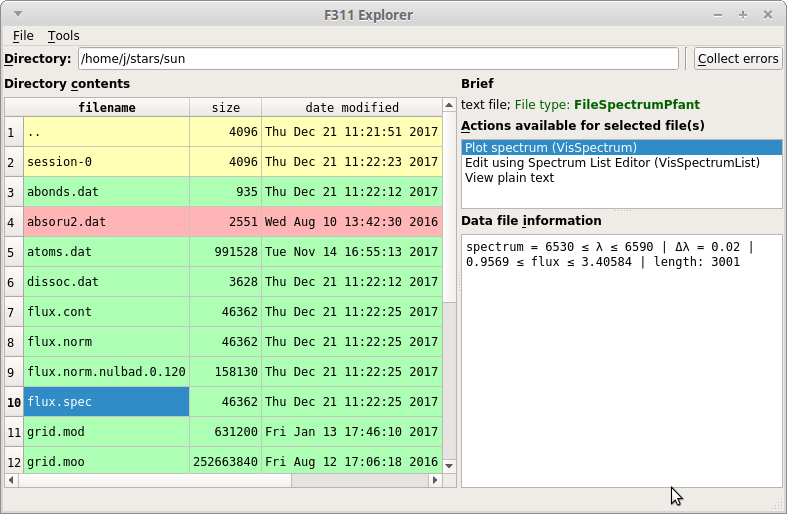

<<<<<<< HEAD
explorer.py screenshot — F311 17.9.27.0 documentation
=======
explorer.py screenshot — f311 17.1.28 documentation
>>>>>>> ccfcb3f73c1ec412e1e5b4806ef25d4e3a009d76
<<<<<<< HEAD
=======
>>>>>>> ccfcb3f73c1ec412e1e5b4806ef25d4e3a009d76
<<<<<<< HEAD
F311 =======
f311 >>>>>>> ccfcb3f73c1ec412e1e5b4806ef25d4e3a009d76
<<<<<<< HEAD 17.9.27.0 ======= 17.1.28 >>>>>>> ccfcb3f73c1ec412e1e5b4806ef25d4e3a009d76
<<<<<<< HEAD
explorer.py
screenshot
=======
f311 Installation
Spectral synthesis (
f311.pyfant
)
Conversion of molecular spectral lines (
f311.convmol
)
Browse, read, write, visualize, edit files (
f311.explorer
)
File handling API (
f311.filetypes
)
Selected topics on Physics (
f311.physics
)
Adaptive Optics Systems Simulation Support (
f311.aosss
)
>>>>>>> ccfcb3f73c1ec412e1e5b4806ef25d4e3a009d76
<<<<<<< HEAD
F311
=======
f311
>>>>>>> ccfcb3f73c1ec412e1e5b4806ef25d4e3a009d76
Docs
»
explorer.py
screenshot
View page source
explorer.py
screenshot
¶
